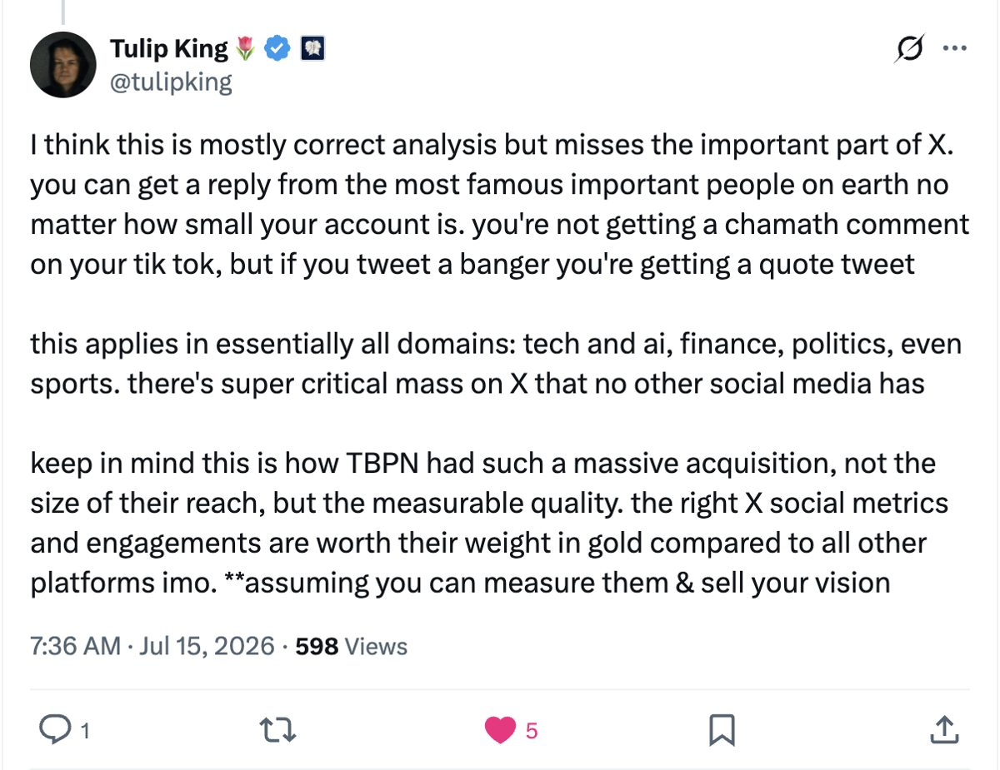
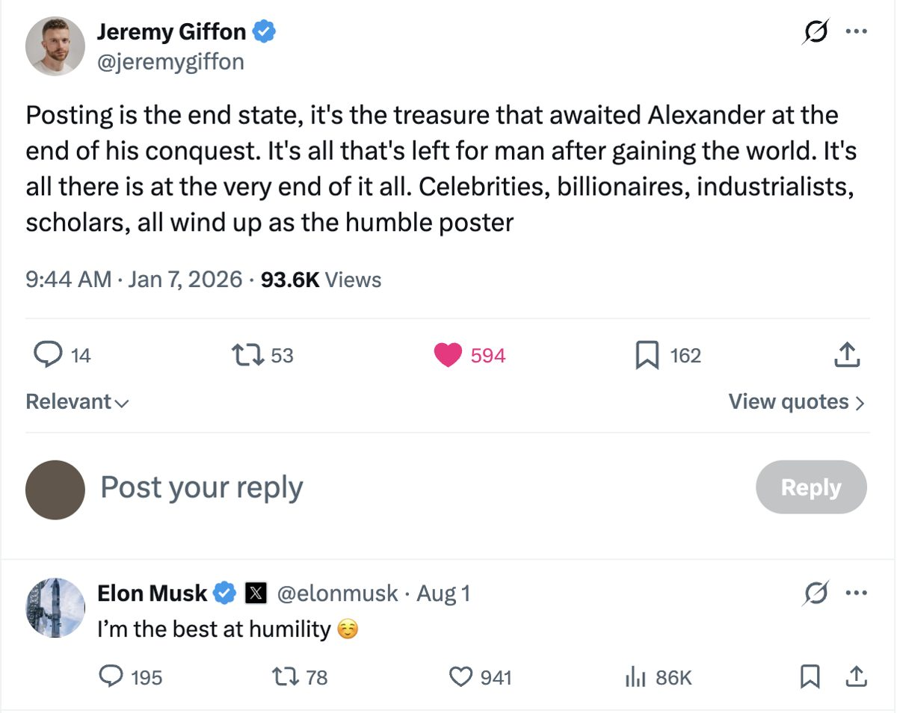
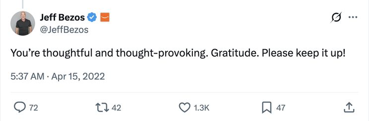
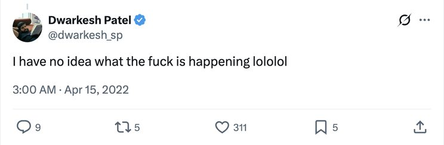
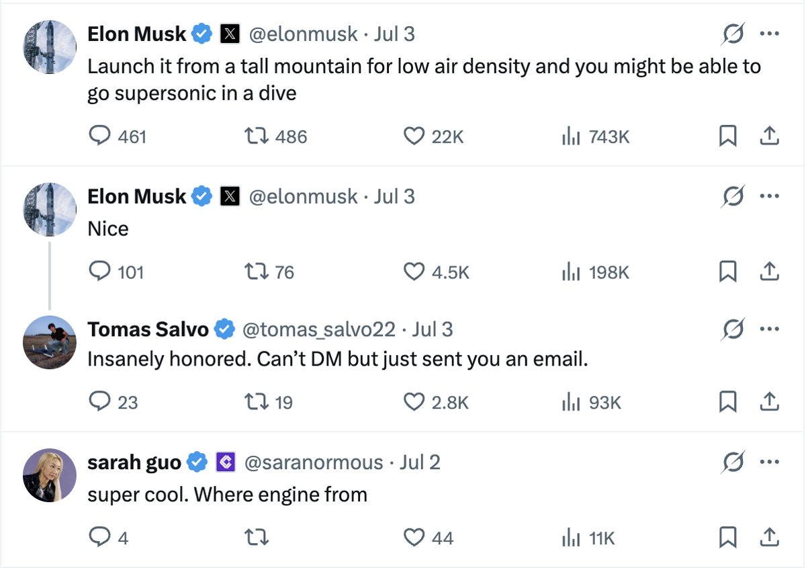
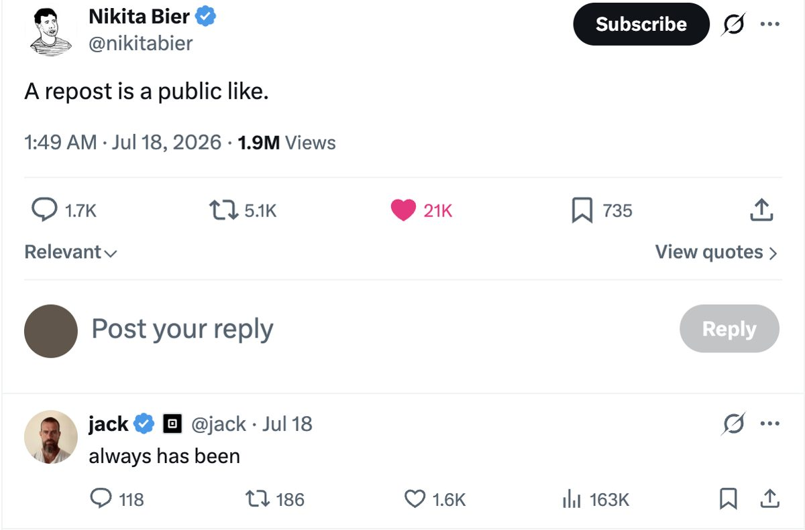
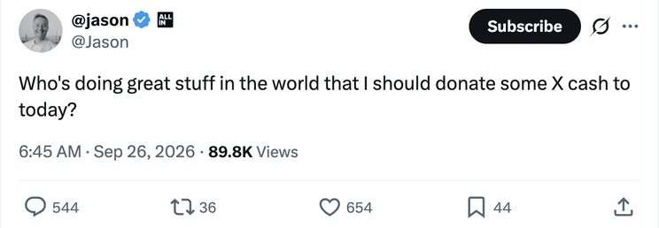

Trust’s Biggest Accelerant: The Co-sign Mechanic
Marc Andreessen or Patrick O’Shaughnessy quote reposts someone with a word or two. Within minutes, a person who was quietly shipping excellent work into the void has something new, an audience.
The work was always there, but what arrived with Marc and co’s digital penstroke was the signal, and that signal has become the most efficient way to get put on.
A reader now has a reason to pay attention, because someone whose judgement they trust has put their name beside it. This is the co-sign.
The co-sign runs back to the ‘40s, from “cosignatory” in contract law. To co-sign was to put your name beside someone else’s on a loan. If they repaid it, nothing happened to you. If they defaulted, the lender came to you.
Stripping it back, a co-sign is you placing your own credit behind another person & agreeing to carry their downside as your own.
From banking to entertainment
In the late ‘80s, Jaz-O was one of Marcy’s most respected rappers, a man with real standing in the neighborhood, and he spent the currency of that standing on a then unknown kid. He put that unknown kid on his own records, “The Originators” and “Hawaiian Sophie,” and in ‘89 flew the emerging rapper to London to teach him the ropes as Jaz made his debut album.
That unknown kid was Shawn Carter, better known as Jay-Z.
That was the shape of a co-sign.
An established name lent credibility to an unproven one and agreed to wear the embarrassment if the bet went bad.
Years later, Jay-Z paid it forward with a producer from the suburbs. Someone who wasn’t taken seriously because he didn’t rap about the same things or represent the culture. Dame Dash eventually signed him, partly to keep him from leaving for another label & Roc-A-Fella’s name and resources gave him a chance to prove himself.
In 2004, Kanye West dropped The College Dropout under Roc-A-Fella records.
For all its power, that world was slow and gated. If your work was good, the hardest part was getting into the room where someone who could vouch for you would even notice it.
This is the part that’s fundamentally changed.

Co-sign but make it 100x
The mechanic hasn’t changed, with social media, it spreads much faster.
Someone with an established audience can notice a piece of work, and their endorsement can instantly carry it into feeds whose readers can pass it on again and again. The author’s profile & the rest of their work are a click away.
Conversations gather in fewer overlapping places. The timeline, group chats, & now lists (more on that later), with some days the timeline completely collapsing on one or two posts and, for a few hours, someone outright wins the internet.
Jeremy Giffon jokes that celebrities, billionaires & industrialists all eventually wind up as humble posters. Those who once seemed unreachable are now contributing to the same digital watering holes.

What really matters is who shares those rooms with one another.
An investor reading a post may also be followed by the founder who needs to hire its author, or the host deciding whom to interview next. Their interest can bring the same piece of work to several people able to do something with it. As those people respond, the next reader arrives with more reasons to pay attention.
A co-sign can start the process & each new person paying attention gives the work another chance to reach someone who can help.
In 2022, before Dwarkesh Patel was Dwarkesh Patel™, Jeff Bezos left a public comment on one of the young podcaster’s posts, telling him he was thoughtful and thought-provoking and to keep it up.

Patel wrote that the comment made him put off quitting for another couple of months, and gave him another reason to continue.

Why some co-signs carry more weight
If I recommend a writer to you and you love their work, you have a reason to trust my next recommendation.
If I keep sending you things that waste your time, you’ll stop listening. Every co-sign gives you another chance to judge my judgement. This is the reputation at stake.
The person giving the endorsement has spent time earning trust and is choosing to lend some of it to someone else, & how much weight you give it depends on whether their judgement has proved useful before.
Tomas Salvo’s post shows how the first bit of attention can travel. On July 2nd, he posted a photograph of Reaper, the jet he’d been working on since Feb lying across his dorm bed. Near the end of the post he adds “New to X”
By the following day, Elon was in his replies suggesting how the aircraft might go supersonic & Sarah Guo was asking where the engine came from.

Explicit and implicit
The co-sign takes several forms.
The loudest is a public endorsement from someone who matters.

The quietest might be a considered reply, and a plain follow sits somewhere between the two. The subtlest of all is the mutual, a standing endorsement that needs no words, & a visible ledger of who has decided you are worth being associated with.
As timelines grow noisier, people have become more deliberate about that ledger, and follower hygiene has become a thing. There’s a little VC in most of us, the private pride of having followed an account before it was obvious, the way you might have played an artist's EP before they broke out.
Anu Atluru, Erik Torenberg & David Booth put this neatly in their essay on Silicon Valley . “Silicon Valley knows people by watching other people know them.” Their distinction between private belief and visible affiliation helps explain why a public reply can matter beyond the person receiving it. Other people can see whose attention they have earned, and decide to take a look themselves.
Experimental productization
A few days ago, the a16z team launched Cosign, a professional network built around these endorsements.
Its profiles can show who has worked together, who has helped someone’s career, & who is willing to recommend them.
The launch gives a practical example where Packy McCormick has a list of companies he would recommend a new graduate join, with open roles surfaced alongside them. His judgement becomes something a reader can use when deciding where to apply.
Gagan Biyani, CEO of the Horowitz Andreessen Academy, calls co-signing “the lifeblood of Silicon Valley” and says he wants to use to build the Academy’s network. His point is that much of this trust already exists between people who read and follow one another, a product can simply help others find it.
The known challenges associated with X and this are obviously that co-signs are difficult to track and can disappear down the feed before the person who needs it ever sees it. is trying to keep that recommendation attached to its subject, so it can be found when someone is hiring, choosing a company or looking for a collaborator.
Its usefulness will depend on how much it tells us about the endorsement. Has this person worked with you, read your posts, invested in your company, or simply known you for years? Those relationships offer different kinds of knowledge. The more clearly a product shows the basis of a recommendation, the easier it is to decide how much weight to give it. The useful test is whether someone outside the familiar circle becomes easier to discover because another person can explain why their work deserves attention.
Money can follow the same path.
X Money, currently rolling out to selected users in the US, supports direct payments between users. Jason asks his followers who is doing work he should support with X cash. The public question asks the network to help decide who deserves backing where a payment can then help them keep doing the work.
A payment alone tells us little about its purpose, but paired with an explanation of what someone believes in, it can make the co-sign tangible.

Outlook
As LLM models get better at writing the post, generating the image, shipping the code & drafting the pitch, the cost of producing things falls toward 0, and anything that can be made on demand becomes cheap.
What stays scarce is what a model cannot make for you, the judgment to know what's good, and a credible person willing to put their name beside yours. Trust and signal hold their value in an AI world precisely because they are the last two things that can’t be generated on demand. The move was never to chase the co-sign, rather, become easy to co-sign. The aim should be “do work clear enough that pointing at it costs the person nothing”.
Show up in the few rooms that matter, as yourself, for long enough to be believed. Hold a view that’s sharp enough that someone could endorse it in a single word without having to explain themselves, & give your own co-signs with care, because the person whose judgment proves reliable becomes the person whose judgment is worth borrowing.